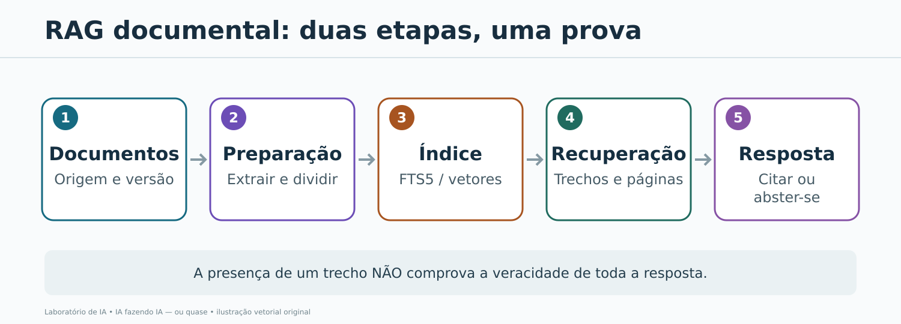
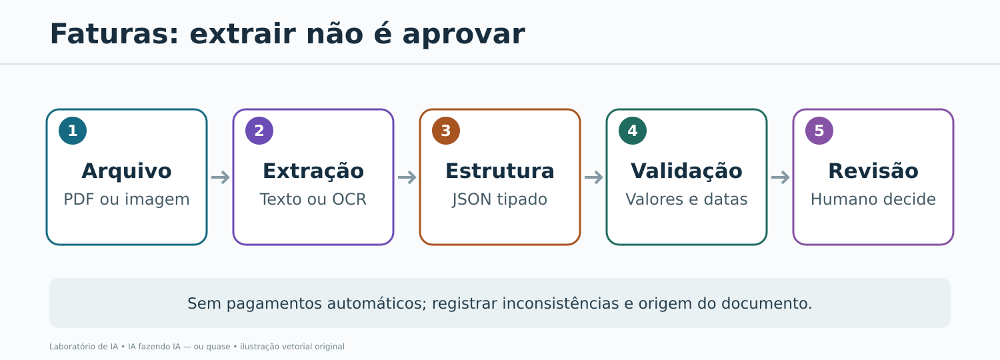

01 / RAG
Assistente documental

Consulta de manuais com trechos e referências. A base de ensino já existe no LAB-RAG-01; não vamos duplicá-la.
Projetos de documentos, voz, faturas e pesquisa; com um quinto sistema dedicado a medir a qualidade dos outros quatro. Um roteiro de aprendizado, não uma promessa de software em produção.


Consulta de manuais com trechos e referências. A base de ensino já existe no LAB-RAG-01; não vamos duplicá-la.

Da fala ao texto, depois ferramentas e confirmação. O protótipo inicial não conecta telefone ou calendário real.

Extrair informações estruturadas com checagens de formato. Validar uma fatura não é autorizá-la nem pagá-la.

Comparar versões e evidências, indicando contradições e incertezas em vez de produzir conclusões infundadas.

Casos de teste e métricas claras. Uma avaliação deve acompanhar todos os demais módulos desde o começo.
| Escopo | Estado | Observação |
|---|---|---|
| Programa demonstrativo local | 10/10 testes unitários PASS em dados fictícios | Dados inteiramente fictícios; testes executados no ambiente de autoria, não em equipamento real. |
| RAG documental | Base existente | LAB-RAG-01 no acervo do livro; integração com outros módulos ainda pendente. |
| GPU, voz, agenda, OCR avançado | Pendente | Não foi realizado ensaio físico ou conexão real. |
Na pasta do projeto, com Python 3 disponível:
python3 -m unittest discover -s testes -v python3 lab.py diagnostico python3 lab.py avaliar --saida saida/avaliacao.json
Os dados de demonstração não contêm chaves de API nem registros pessoais.